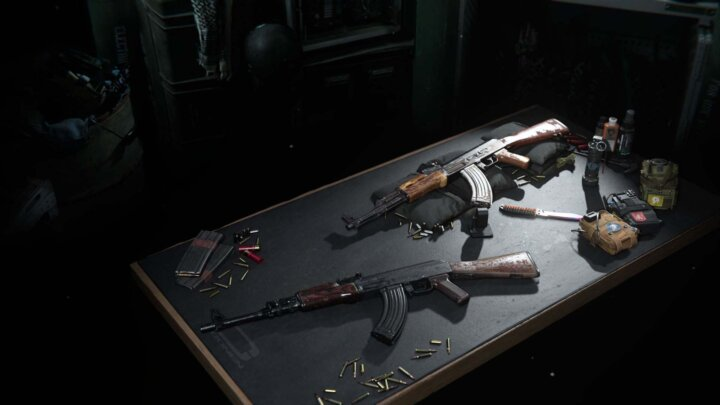

Season 3 in Call of Duty & Warzone – Leaks show new weapons and map changes
Season 3 of Black Ops Cold War introduces new weapons. One leak showcases the first details on six newcomers.
Multiple leaks are hinting towards potential things to come in Season 3 of Call of Duty: Black Ops Cold War and Warzone.
The season will kick off on April 22nd and will offer new weapons and map changes according to insiders. There are no official announcements or confirmations yet, so treat these with a grain of salt.
Six newcomers?
According to leaker “ZestyCODLeaks” six new weapons are headed towards CoD. Among them will be an assault rifle, a machine pistol and a throwing knife. While the filenames “ar_t9fastburst”. “sm_t9spray” and “me_t9ballisticknife” do not offer hints for the actual weapons, they give us a start to speculate.
“ar_t9fastburst” most likely hints at a high fire rate assault rifle, while “sm_t9spray” could be a machine pistol with a more distinct spray pattern.
Silent usage
The file “me_t9ballisticknife” seems to hint at a throwing knife, that allows players to take down opponents silently. According to the leaker these weapons will be introduced in season 3. He has found three more files: “Baseball Bat”, “lm_t9slowfire” and “pi_t9fullauto”, which could also be introduced to Warzone on April 22nd.